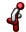
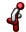

Version: 5.2.1
3 Embedding Bitmaps in Compiled Files
Producing computed bitmaps can take time.
To reduce the startup time of programs that use computed bitmaps, use the macros exported by images/compile-time to compile them: to embed the computed bitmaps in fully expanded, compiled modules.
This is a form of constant folding, or equivalently a form of safe “3D” values.
The macros defined here compute bitmaps at expansion time, and expand to the bitmap’s bytes and a simple wrapper that converts bytes to a bitmap%.
Thus, fully expanded, compiled modules contain (more or less) literal bitmap values, which do not need to be computed again when the module is required by another.
The literal bitmap values are encoded in PNG format, so they are compressed in the compiled module.
To get the most from compiled bitmaps during development, it is best to put them in files that are changed infrequently.
For example, for games, we suggest having a separate module called something like images.rkt or resources.rkt that provides all the game’s images.
Evaluates
expr at expansion time, which must return a
bitmap%, and returns to the bitmap at run time.
Keep in mind that
expr has access only to expansion-time values, not run-time values.
Generally, to use this macro, wrap a
bitmap%-producing expression with it and move any identifiers it depends on into the expansion phase.
For example, suppose we are computing a large PLT logo at run time:
Running this takes several seconds. It produces
To move the cost to expansion time, we change the program to
The logo is unchanged, but now
expanding (and thus compiling) the program takes several seconds, and running it takes a few milliseconds.
Note that
images/logos is now required
for-syntax, so that the expansion-phase expression
(plt-logo 384)
has access to the identifier
plt-logo.
Use this for animations. For example,
This computes
| > running-stickman-frames |
(list   )  ) |
at expansion time.